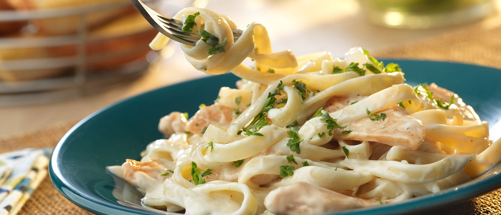

Home
Alfredo Sauce

Description
Alfredo sauce is a rich and creamy white sauce made from butter, heavy cream, and Parmesan cheese. It is a staple
in Italian-American cuisine, commonly served over fettuccine pasta. The sauce is known for its smooth texture
and indulgent flavor, making it a favorite for pasta lovers.
Ingredients
- 2 tablespoons butter
- 1 cup heavy cream
- 1 cup grated Parmesan cheese
- 2 cloves garlic, minced
- ½ teaspoon salt
- ¼ teaspoon black pepper
- ¼ teaspoon nutmeg (optional)
- 1 tablespoon chopped parsley (for garnish)
Steps
- Melt butter in a saucepan over medium heat.
- Add minced garlic and sauté until fragrant (about 30 seconds).
- Pour in heavy cream and stir well.
- Reduce heat to low and slowly mix in the grated Parmesan cheese.
- Stir continuously until the cheese melts and the sauce thickens.
- Season with salt, black pepper, and nutmeg (if using).
- Simmer for 2–3 minutes until smooth and creamy.
- Remove from heat and garnish with chopped parsley.
- Serve immediately over pasta or as a dipping sauce.